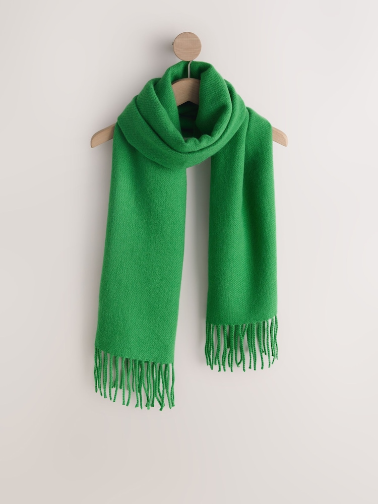

My Green Scarf
My favorite garment is a green scarf. I like its color because it looks refreshing and adds style to an outfit. A scarf can also provide warmth and comfort.

Learn more about clothing: Visit the Clothing Website